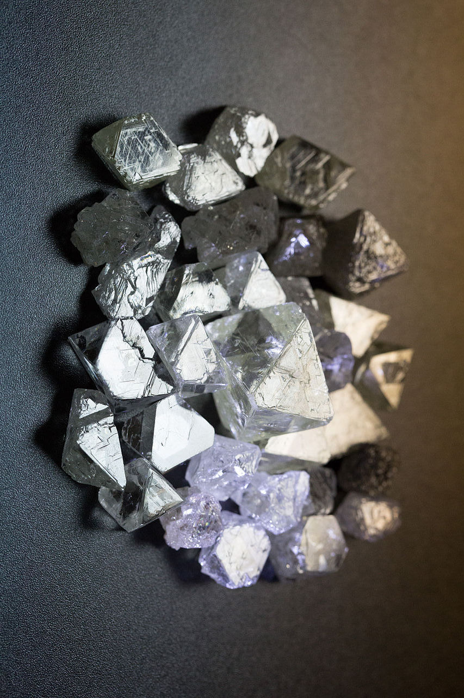
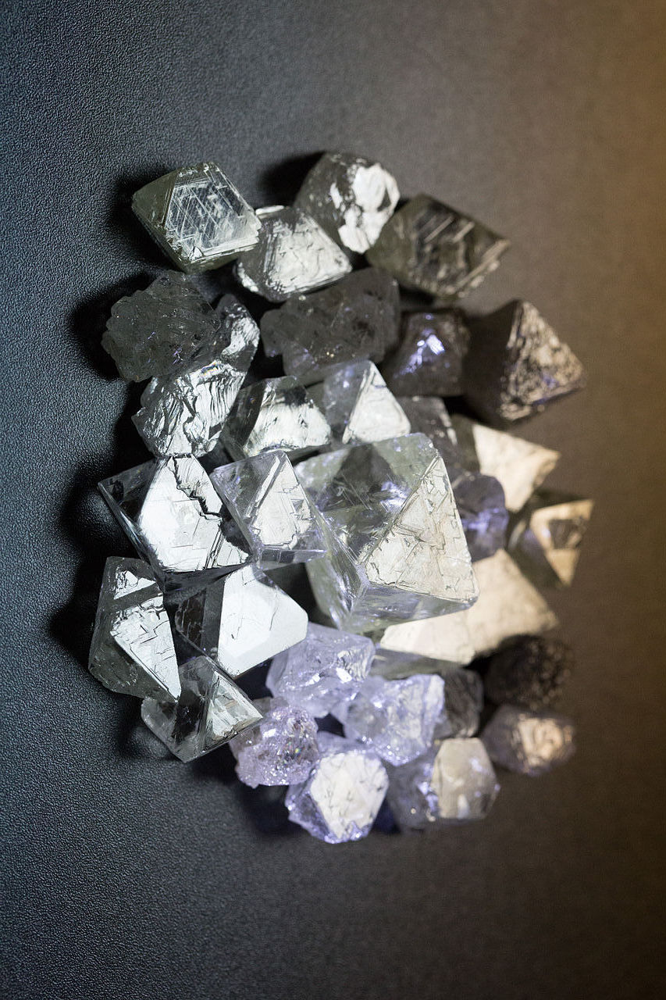
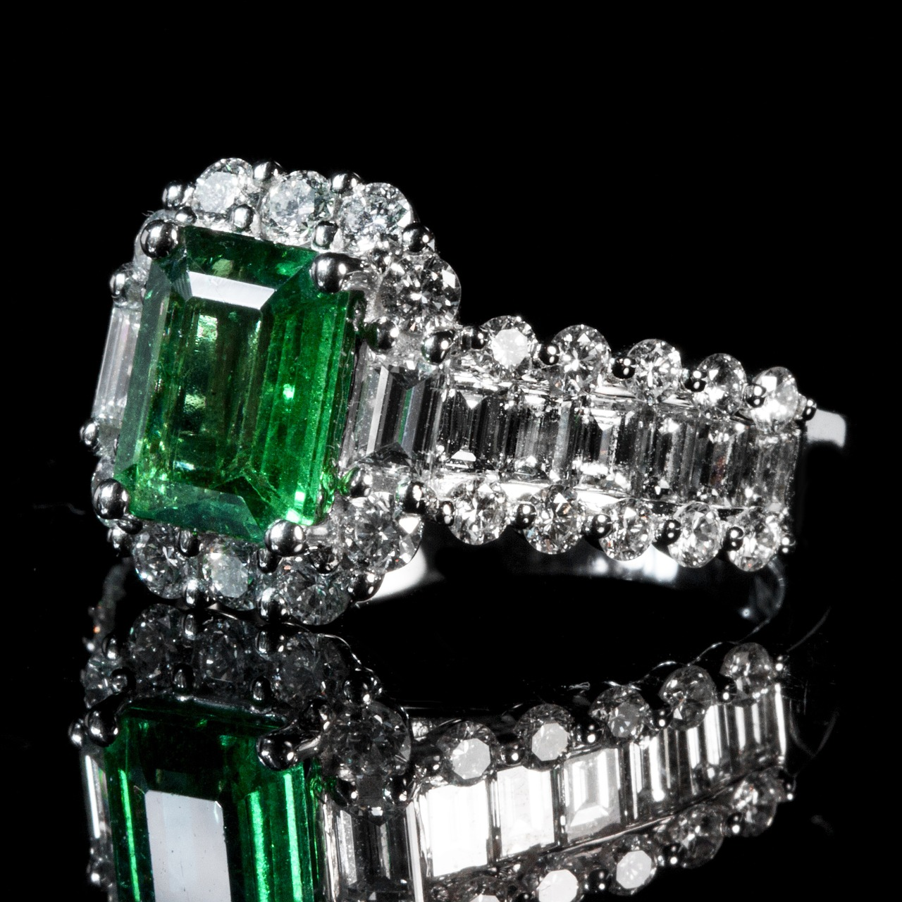
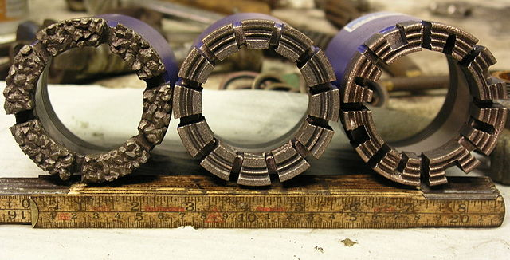
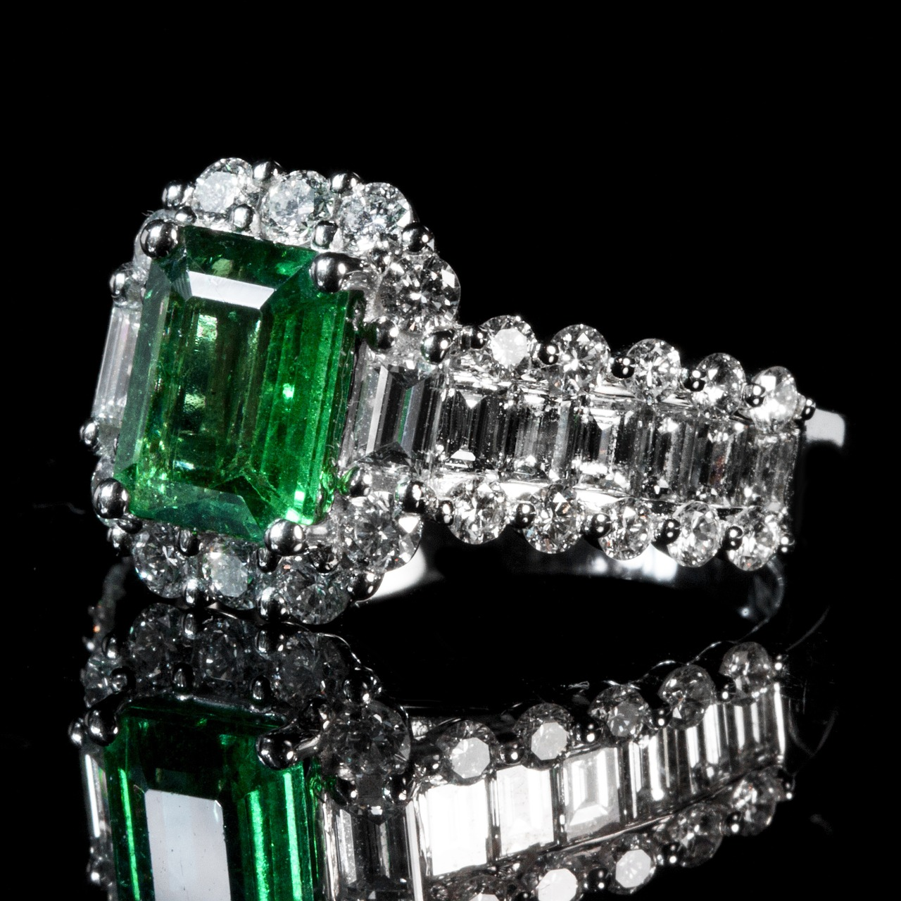
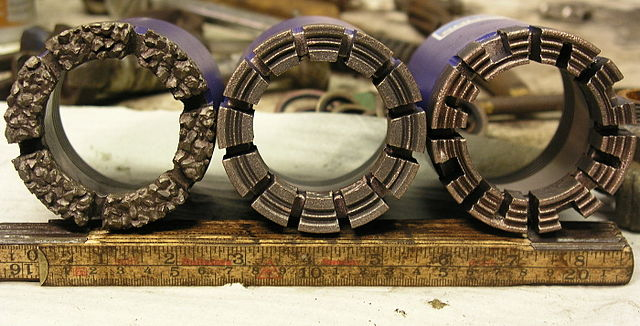

Name: Carbon (Diamond)
Formula: C
Atomic Number: 6
Group: 14
Block: p
Period: 2
Relative Atomic Mass: 12.011
Discovery Date: Prehistoric
Appearance: Diamond is a colourless, transparent, crystalline solid.
Uses: Jewellery, cutting rocks, driling
 



Atomic Structure: